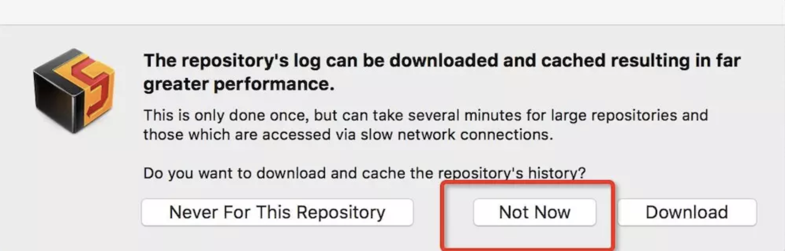

Could not contact repository to read the latest log entries.The log displayed may be incomplete.
这个问题的出现具体原因不明，可能是因为log数据量太大吧，下载不下来。这时候我们需要清空一下cornerstone的缓存，然后再选择是否下载日志的时候选择Not Now。这样每次看log都是实时请求，也就不会出现上面的问题了，具体操作如下：
先退出 cornerstone。
打开终端，敲入下面命令。
# com.zennaware.Cornerstone 是 Bundle identifier
# 如果用的是破解版的app的话，Bundle identifier可能不是这个
# 可以打开app里的info.plist，确定Bundle identifier
defaults delete com.zennaware.Cornerstone HistoryCacheUsage
重新打开Cornerstone，点击 log 弹出警告框,切记一定要选择Not Now,不要默认选择的Download, 这时候就搞定了。
